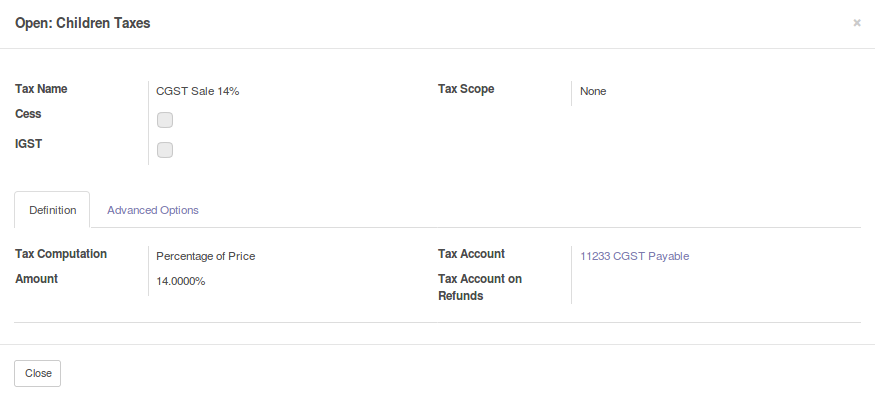
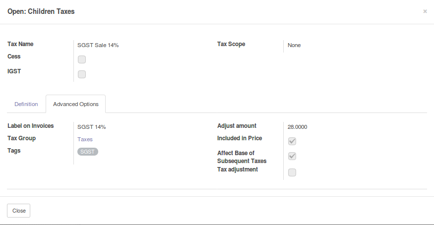

<section class="oe_container">
  <div class="oe_row oe_spaced">
	<div class="oe_span12">
	  <h2 class="oe_slogan" style="color:#875A7B;">Tax Adjustment</h2>
	  <h3 class="oe_slogan">New Field for adjusting tax have added</h3>
	  <p class="oe_mt32">
		The module allows to adjust the tax calculation in group of tax(incl) method:
		<ul>
		  <li>New adjust field in tax form</li>
		  <!--<li>Disable removing non-empty order</li>-->
		</ul>
		</p>
	  <p>
		To use go to Accounting --> TAX section, open tax edit form and move to "Advanced opitons" tab .
		  Please add adjust amount only for children tax


	  </p>
		<p>
			Eg: - For GST 5% tax will have children of SGST 2.5% and CGST 2.5%
		  then set 5 in adjust amount in childrens
		</p>
	  <div class="oe_screenshot" align="center">

		  

		  <p>..................................</p>

		  

      </div>
	</div>
  </div>
</section>

